Prefix Sum / Finite Difference
程度★ 難度★
前綴和
從頭開始的連續數字和。
實作時，原本陣列開頭加一空格，程式碼更簡潔。
UVa 10324 10994
差分
相鄰數字差。
UVa 10038
前綴和與差分互為反運算
前綴和就是數列積分，差分就是數列微分。
先做一次前綴和、再做一次差分，就得到原數列。
Range Query資料結構: “Variant” Segment Tree
程度★★ 難度★★★
註記
此資料結構由競賽選手發明，沒有發表為正式的學術論文。目前網路上普遍稱呼為Segment Tree。
然而「Segment Tree」已經是知名的資料結構，所以此資料結構勢必另取他名，以免產生混淆。筆者認為也許Sequence Tree之類的稱呼比較妥當。
此資料結構已經衍生兩種實作方式，來源考察如下。
一、Top-down “Variant” Segment Tree：
目前發現最早出現於Baltic OI 2001: Mars Maps，官方解答提供了此資料結構的程式碼，但是完全沒有提及線段樹。
之後英文網路傾向稱作range tree、interval tree，而中文網路傾向稱作線段樹。這些稱呼都是既有的資料結構名稱。
二、Bottom-up “Variant” Segment Tree：
2010年，出現於清华大学张昆玮「统计的力量——线段树全接触」投影片，由上述的Top-down “Variant” Segment Tree發展而來。作者明確表示此資料結構並非是原始的線段樹。
筆者推測此資料結構傳入中國後，被不明所以的網友譯作線段樹。之後因為中國創造大量相關題型，例如SPOJ: GSS3，使得線段樹之名稱被發揚光大。英文網路亦開始傾向稱作segment tree。
Top-down “Variant” Segment Tree【尚無正式名稱】
存放一串數列，支援修改數值，不支援插入、刪除數值。
遞迴二分區間，樹葉存放數列，一個樹葉儲存一項；內部節點存放擴充資訊，例如數列區間和、區間最大值、區間最小值。
節點最多是2N-1個，空間複雜度為O(N)，時間複雜度為O(N)，N為數列長度。
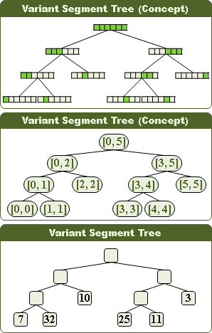偽線段樹還可以推廣到高維度，存放二維陣列、三維陣列。二維偽線段樹，是先製作一棵第一維度的偽線段樹（稱作X樹），然後每個節點各自接上一棵第二維度的偽線段樹（稱作Y樹）。
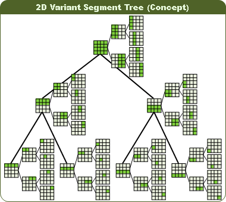Bottom-up “Variant” Segment Tree【尚無正式名稱】
請參考「统计的力量——线段树全接触」投影片。
讀者須具備「Bitwise Operation」基礎。
偽線段樹的功能
偽線段樹的特色是處理區域，主要有三種題型：
1. 更新一個元素，查詢一塊區域。（可以推廣到高維度） 2. 更新一塊區域，查詢一個元素。（僅有一維可行） 3. 更新一塊區域，查詢一塊區域。（僅有一維可行）
更新元素、查詢區域
更新元素、查詢區域，類似二元搜尋樹，時間複雜度為樹的深度O(logN)。
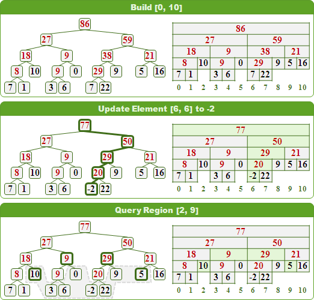推廣到高維度之後，更新元素時，要小心處理。
UVa 11297 12299
更新區域、查詢元素
更新區域有兩種類型：統統改為一數值、統統增減一數值。
統統改為一數值。更新區域時，若遭遇已改值的區域，則細部劃分之後挪至下層。查詢元素時，凡遭遇已改值的區域，即得答案；不用理會其餘子孫。
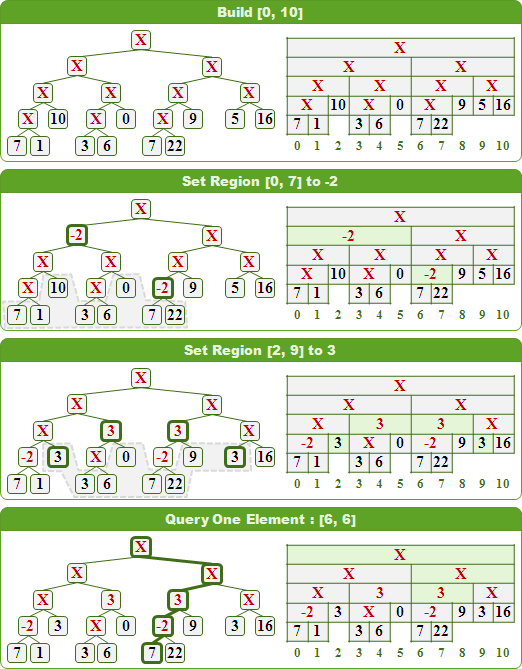統統增減一數值。更新區域時，直接在對應區域上累計增減值，完全不必細部劃分、挪往下層。查詢元素時，只需累加路線上的增減值。
無法推廣到二維以上。會有區域不包含但是相交的情況。
更新區域、查詢區域
更新區域時，找到對應區域設值、增減值，也更新對應區域所有祖先的總和、最小值、最大值。查詢區域時，便無大礙。
無法推廣到二維以上，會導致區域部分相交的問題。
UVa 11402 11992
更新區域（統統增減一數值）、查詢區域（總和）
http://www.notonlysuccess.com/index.php/segment-tree/
原陣列a[i]先算差分d[i]。維護兩棵偽線段樹，分別是d[i]與i*d[i]。
a[i]的差分d[i]，維護d[i]前綴和、i*d[i]前綴和 d[i]的兩元素+n ---> 區間+n logN d[i]的前綴和 ---> 原數字 logN 前綴和的前綴和 ---> 區間和 logN 用d[i]和i*d[i]算 (功能是區間查詢總和＋區間修改)
PKU 3468
查詢區間內極大區間
ICPC 3938
前綴和、二分搜尋，取代二元搜尋樹
freq[n]++，維護freq[i]前綴和 元素+1/-1 ---> 動態插入/刪除數字 前綴和 ---> 得到n的名次 logN 前綴和二分搜k ---> 第k大的數 logNlogN
UVa 11525 11990 ICPC 4329
Partial Sum Query資料結構: Binary Indexed Tree
程度★★ 難度★★★
Binary Indexed Tree（Fenwick Tree）
存放一串數列，可以快速算出任意區間的總和。
可以修改數值，但是不能插入、刪除數值。
Binary Indexed Tree其實是儲存數列第1項到第N項的總和，每一種N值的總和都有儲存。
儲存第1項到第N項的總和，是把第1項到第N項被切割成好幾個區段，分別儲存這些區段的總和。切割的方法，是以二的次方來分段，先分出數量級最大的區段，再逐步分出數量級次小的區段。由項次小往項次大的方向切割。
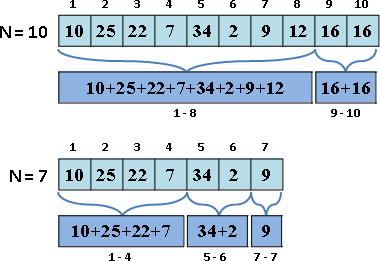用另一種角度來看，是把N化作二進位，逐次刪去最低位的1來分段。由項次大往項次小的方向切割。
10的二進位是1010。 刪去最低位的bit，分割成 1010 ~ 1000+1，剩下1000。 刪去最低位的bit，分割成 1000 ~ 0000+1，剩下0000，結束。 7的二進位是111。 刪去最低位的bit，分割成 111 ~ 110+1，剩下110。 刪去最低位的bit，分割成 110 ~ 100+1，剩下100。 刪去最低位的bit，分割成 100 ~ 000+1，剩下000，結束。
由於每一種N值，都可以分割成形形色色的區段，於是就產生了很多種不同的區段。就是那麼碰巧，所有不同的區段剛好共是N種，可以擠在N個格子的表格裡面！
本體是一條陣列，存著不同區段的總和。區段大小像是碎形。
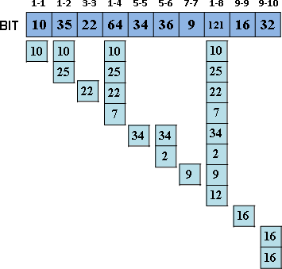Binary Indexed Tree可以視作偽線段樹的精簡版本，附加紀錄總和，並且移除樹根及全部右小孩。
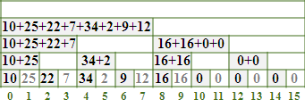計算第1項到第N項的總和
從表格當中挑出各個對應的區段，進行累加即可。
外觀像是爬樓梯，往項次小的方向爬，越爬越高。
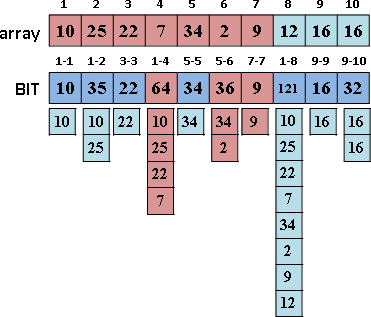修改一項數值
看看表格中有哪些區段是包含這一項的，修正差值即可。
外觀像是往右爬樓梯，往項次大的方向爬，越爬越高。
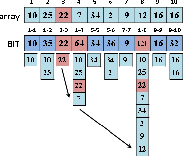複雜度
建立時間為O(NlogN)，建立空間為O(N)，修改一項數值的時間是O(logN)，計算任意區間總和的時間是O(logN)。
註：採用偽線段樹的建立手法，建立時間變為O(N)。
UVa 11423 11610
推廣到高維度
Binary Indexed Tree可以推廣到高維度，建立方法是逐次處理各維度即可。以二維為例，先把矩陣切成一條一條的橫條，每個橫條都建立Binary Indexed Tree；然後以第一條橫條的表格為基礎，表格中的每一種區段，都建立垂直方向的Binary Indexed Tree，如此便完成了二維的版本。
簡單的來說，就是先橫向加總一個個數值，形成一段段區間，然後再垂直加總一段段等寬區間，形成一塊塊長方形區域。
建立時間為O(XlogX * YlogY * ...)，建立空間為O(XY...)，修改一項數值的時間是O(logX * logY * ...)，計算任意矩形區域總和的時間是O(2^D * logX * logY * ...)。
UVa 11601
Range Minimum Query資料結構: Sparse Table
程度★★ 難度★★
Sparse Table
【註：古代人取的名稱，今日看來有點詞不達意。】
存放一串數列，可以快速算出任意區間，其中一個最小（大）值的所在位置。
不能修改、插入、刪除數值。
計算方式是依序求出寬度為1、2、4、8、……的區間最小值，區間的各種可能位置都要算一遍。兩個窄區間可以快速合成出一個寬區間。
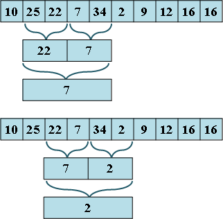將寬度為1、2、4、8、……的區間最小值，儲存於表格。
t(i, j) =
{ min{ t(i-1, j), t(i-1, j+2^(i-1) } , if i > 0
{ value[j] , if i = 0
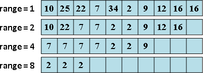
實作時，通常表格中紀錄的是索引值、指標，而不是直接紀錄數值的最小值。
計算第1項到第N項的最小值（的索引值）
查詢時，先從表格中找到寬度略短於（相等於）查詢區間的區間，以靠左、靠右的兩條等寬區間，求得查詢區間的最小值：
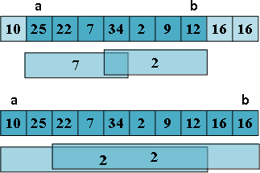複雜度
建立時間為O(NlogN)，建立空間為O(NlogN)，計算任意區間最小值的時間是O(1)。
UVa 11235
推廣到高維度
這個資料結構可以推廣到高維度，建立方法是逐次處理各維度即可。以二維為例，先把矩陣切成一條一條的橫條，每個橫條都建立1D RMQ；然後以第一條橫條的表格為基礎，表格中的每一個子問題，都建立垂直方向的1D RMQ，如此便完成了二維的版本。
建立時間為O(XlogX * YlogY * ...)，建立空間為O(XlogX * YlogY * ...)，計算任意矩形區域最小值的時間是O(2^D)。
UVa 11263
延伸閱讀：±1 Range Minimum Query
以O(N)時間建立Cartesian Tree，RMQ問題就轉換成LCA問題。
以O(N)時間用DFS遍歷，記下到訪次序（作為索引值）、深度（作為元素值），LCA問題就轉換成±1RMQ問題。
一維的±1RMQ問題，有著相當複雜的O(N)時間演算法，此處省略之。
Range Equality Query資料結構: Quadtree
程度★★ 難度★★
Bitree / Quadtree / Octree / Hextree
二元樹、四元樹、八元樹、十六元樹分別是一二三四維的版本。以下文章以二元樹作為樣例，進行說明。
如果區間不是相同顏色，就繼續遞迴對半分割下去。區間長度只能是2的次方。
更新元素有三大步驟。一、搜尋之時，原有顏色分離，挪往下層。二、就位之時，直接覆蓋顏色，刪除子樹（或者無視子樹）。三、回溯之時，相同顏色合併，挪往上層。
此番技巧，英文網路稱作「lazy propagation」，中文網路稱作「延遲標記」。筆者尚未查出正式的學術名稱。
更新區域，視情況左右子樹都得走。
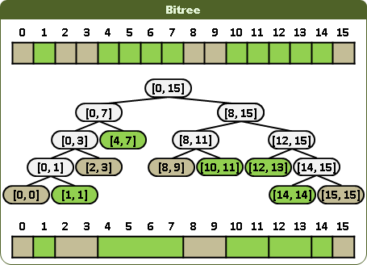 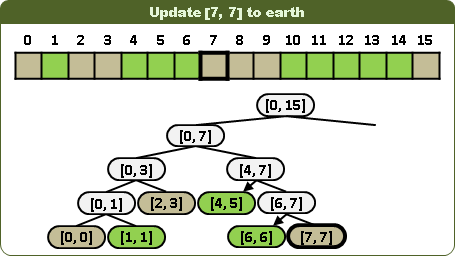 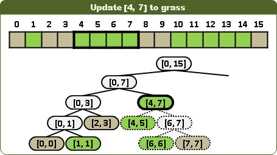 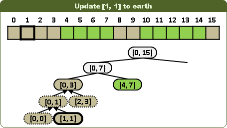更新元素、查詢元素，時間複雜度為O(logN)。更新區域、查詢區域，時間複雜度為O(N)。
UVa 297 11941 11948